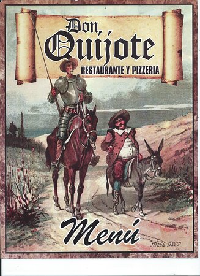
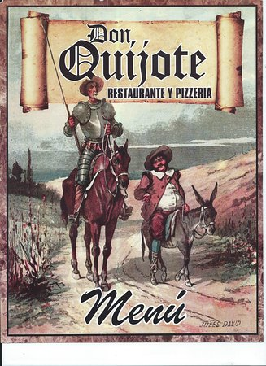
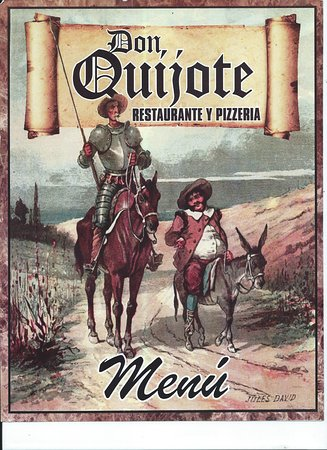

Aunque la novela del Quijote fue publicada cientos de años después, continua siendo muy popular incluso en el dia de hoy. Su influencia es muy grande y global, al punto que la mayoria de las personas conocen quien es Don Quijote y Sancho Panza aun si no han leido la novela. El personaje es tan famoso que de alguna forma se ha vuelto en un personaje importante en la historia, que sobrepasa a su propio autor. A continuacion, se puede observar algunas estatuas de Don Quijote, una tienda en Japon del mismo nombre, y un restaurante de pizza en Puerto Rico.
